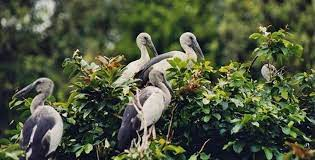
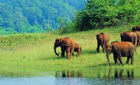
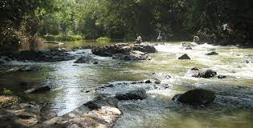
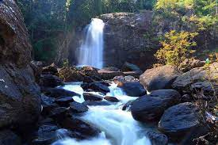

Chembara Peak
Chembra is the highest peak in Wayanad district and lives up to its billing of being a picturesque location. It has managed to maintain its pristine nature over the years. Situated 2,100 m above sea level, this peak offers a breath-taking view of rare flora and fauna. One can come across many exotic species in these parts. The route to the peak itself has a brilliant view along with a heart-shaped lake, waterfalls and lush greenery the whole way. It is a prime spot for trekking but prior permission needs to be taken before going on these treks.

Pakshipathalam
People who seek a challenging yet enriching trek shall find their wishes fulfilled at Paskshipathalam. A local tribal guide leads you on an exceptional trip that canvasses this unique forest area. The deep caves at the northern end give one a great view of the biodiversity of the locality. The range of bird species found here is unmatched. Herds of gaurs can be occasionally seen passing through the place while Giant Malabar Squirrels greet all who pass by. It is a wonderful way to spend a day in Wayanad while being embraced by nature from all sides.

Muthanga Wildlife
Muthanga Wildlife Sanctuary is contiguous to the protected area network of Nagarhole and Bandipur of Karnataka on the north east and Mudumalai of Tamil Nadu on the southeast. Rich in bio-diversity, the sanctuary is an integral part of the Nilgiri Biosphere Reserve. The management lays emphasis on scientific conservation with due consideration for the general lifestyle of the tribals and others who live in and around the forest region. The Sanctuary has a large population of pachyderms and has been declared a Project Elephant site.

Kuruva Dweep
Kuruva Dweep or Kuruva Island is a protected river delta, comprising a cluster of islands over the middle of Kabini River in Wayanad. Spread over 950 acres of land, Kuruva Island is densely populated with rich flora and fauna. The geographical peculiarity of this island makes this place evergreen with a serene ambience.

Soochipara waterfalls
Soochipara Falls also known as Sentinel Rock Waterfalls is a three-tiered waterfall in Vellarimala, Wayanad, India. It is surrounded by deciduous, evergreen and montane forests. Locally referred to as Soochipara ("Soochi" meaning "Needle" and "Para" meaning "Rock"), the 15-20 minute drive from Meppadi to Sentinel Rock Waterfalls has views of a number of Wayanad's tea estates.[1] The Sentinel Rock Waterfalls is 200 metres (656 feet) and offers a cliff face that is used for rock climbing.[2] The water from Soochipara Falls[3] later joins Chulika River or popularly known as Chaliyar River after Velarimala Hills near Cherambadi (Tamil Nadu) in Kerala.